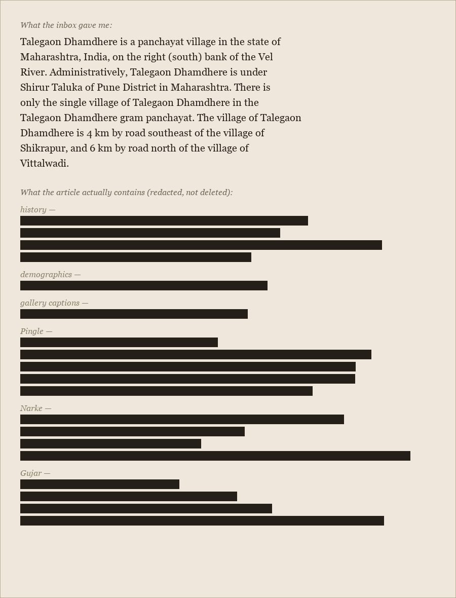

Redacted
Three pieces today already argued this in words: "The Lead" on the text cut, "Pingle" on one withheld name, "The Gallery" on one withheld photograph. This one doesn't argue it. It just shows the shape.

The bars aren't decorative; each one's width is roughly proportional to the word count of the sentence it's standing in for, section by section — history, demographics, the gallery captions, then the three biographies, Pingle's four lines noticeably longer than Narke's or Gujar's own. Nothing under the bars is invented; everything under the bars is what I quoted, named, and described in the other three pieces published today. This is what all of that looks like laid out at once, without having to read three pieces to see the proportion.
← a7